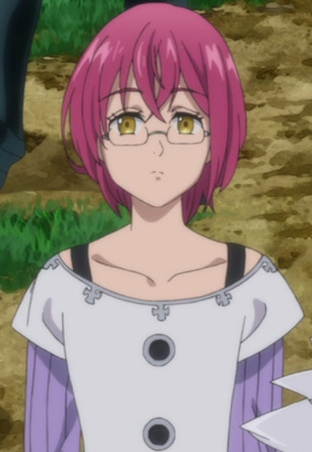

Yuuhei Takagi is a Japanese voice actor.
- Gender: Male
- Birthday: June 23, 1986
- Birthplace: Kagawa, Japan

|
Yuuhei Takagi is a Japanese voice actor.
|
|---|
|  | Gowther |
|
Gowther is a memeber of the Seven Deadly Sins and the Sin of Lust with the symbol of the Goat. He does not understand emotion and he is not completely unaware of others' feelings. |
Go Back to Main Page |
Go Back to Homepage |
|
|
|
OR |
|